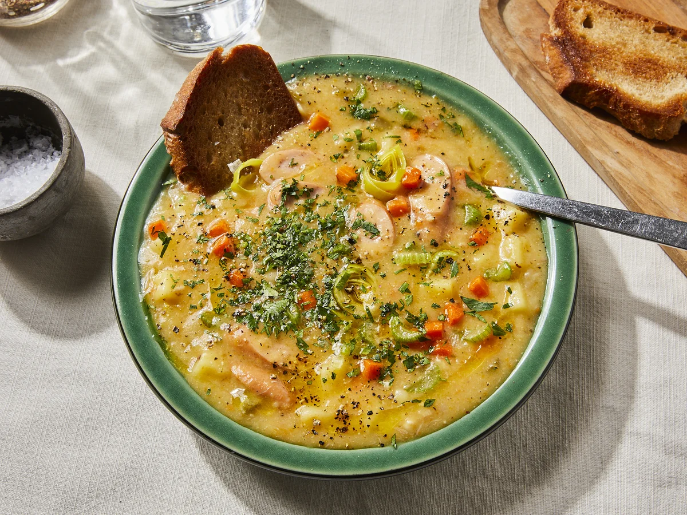

Potato Soup

This perfectly warming, satisfying German potato soup transports me to my grandma’s kitchen and hits the spot every time. This potato soup recipe uses hearty potatoes, aromatic vegetables and a pinch of nutmeg for a cozy bowl of nostalgia-packed goodness—essential during cold German winters. Vienna sausages and bacon take the flavor to the next level, adding an unforgettable smoky, salty richness.
2½ poundspotatoes1onion, diced3-4carrots8 ouncescelery1leek10-12 ouncesbacon, diced2-3 cupsvegetable broth3-4 cupswater1 tspdried marjoram1 tspmustard- Salt to taste
- Black pepper
- Ground nutmeg
- Parsley (optional)
- Crusty bread (optional)
Cut sausages into slices. Peel and dice potatoes, carrots, and celery. Peel and chop onion. Wash and slice leek. Chop parsley.
Put bacon in a pot with some hot oil, add chopped onion and sauté until onion is translucent. Add diced potatoes, carrots, leek and celery. Sauté for approx. 10 min. more, then deglaze with vegetable broth and water. Add marjoram and about 2 tsp of salt, and let cook for approx. 30 min.
Remove about a third of all the cooked vegetables and set aside, then use an immersion blender to purée the rest in the pot. Put previously removed vegetables back, and add mustard, pepper, nutmeg, and Vienna sausage slices. Leave to simmer for approx.10 min. Adjust seasoning as needed. Adding a bit of Crème Fraîche. Serve soup with some chopped parsley sprinkled on top. Enjoy!